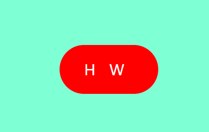
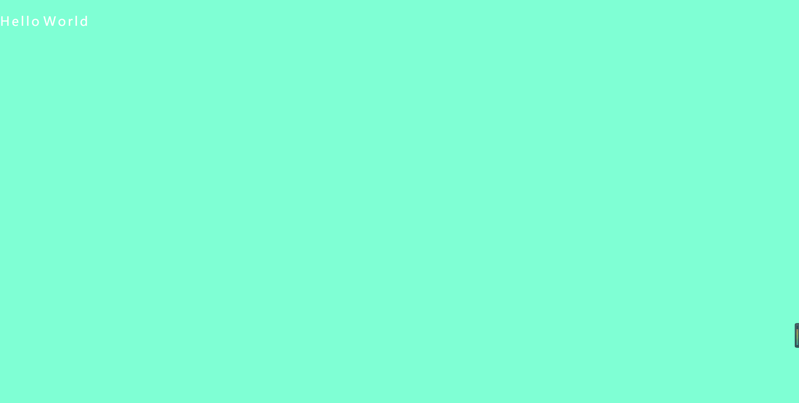
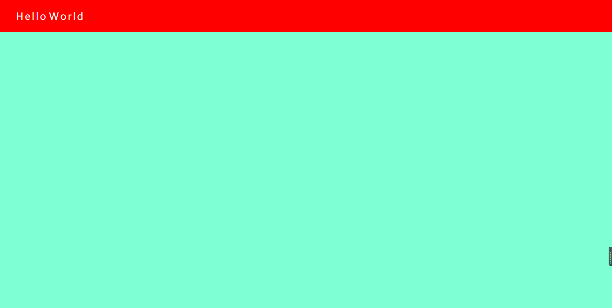
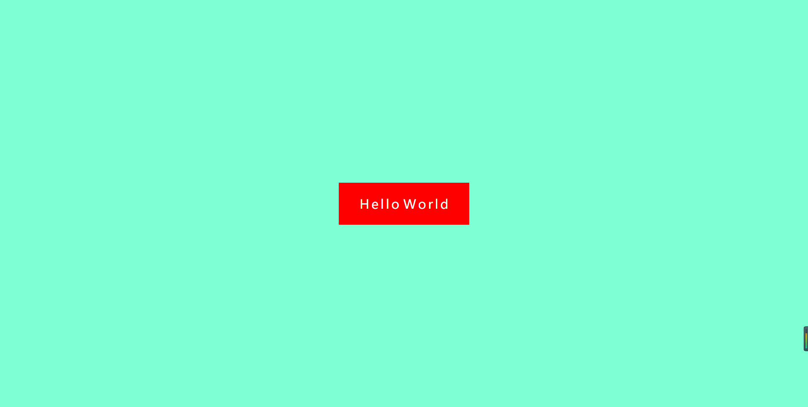
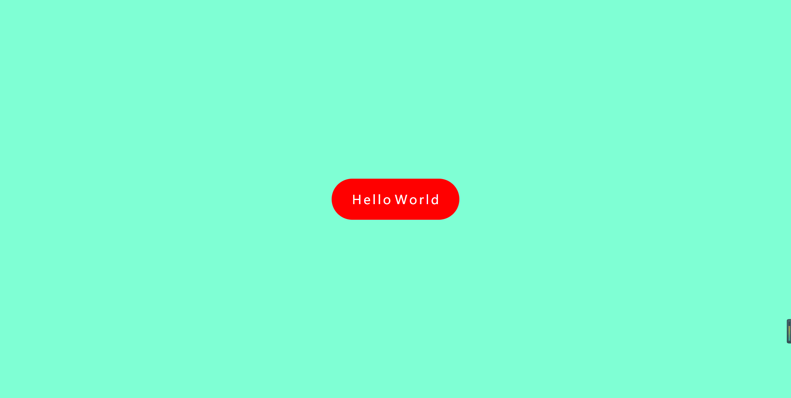

实现过程
<div id="char1">
<span class="my-span ">H</span>
<span class="my-span my-hide">e</span>
<span class="my-span my-hide">l</span>
<span class="my-span my-hide">l</span>
<span class="my-span my-hide">o</span>
<span class="my-span">W</span>
<span class="my-span my-hide">o</span>
<span class="my-span my-hide">r</span>
<span class="my-span my-hide">l</span>
<span class="my-span my-hide">d</span>
</div>CSS布局
*{
margin：0px；
padding：0px;
}
body{
background-color:aquamarine;
width:100%;
height:100vh;
}
height:100vh;——vh作用：将视口平分为100份，100vh就是占满屏幕
#char1{
width：100px；
height:100px;
background-color:red;
}
给body标签加一个弹性盒子模型，#char1外边距auto，让文字在视口的中间
body{
background-color:aquamarine;
width:100%;
height:100vh;
dispaly：flex：
}
#char1{
width：100px；
height:100px;
background-color:red;
margin：auto；
}【注意】

利用border-radius使盒子倒角
#char1{
border-radius：80px；
}
设置span样式
.my-span{
color: white;
font-size: 30px;
line-height: 6.25rem;
display: inline-block;
/*添加样式数值在变幻时的过渡效果*/
transition: 1s;
}display: inline-block;设置成为行内块元素
transition: 1s;添加样式数值在变幻时的过渡效果
设置隐藏文字
.my-hide{
opacity:0px;
width:0px;
}利用伪类选择器在鼠标经过时显示文字
#char1:hover>span.my-hide{
opacity: 1;
/* width:auto; */
width:16px;/*当想要过度显示span时，不要使用width：auto；要是用确定数值的方式*/
}完整代码
html代码
<!DOCTYPE html>
<html>
<head>
<meta charset="utf-8">
<title>文字折叠</title>
<link rel="stylesheet" type="text/css" href="css/CharStyle.css" />
</head>
<body>
<div id="char1">
<span class="my-span ">H</span>
<span class="my-span my-hide">e</span>
<span class="my-span my-hide">l</span>
<span class="my-span my-hide">l</span>
<span class="my-span my-hide">o</span>
<span class="my-span">W</span>
<span class="my-span my-hide">o</span>
<span class="my-span my-hide">r</span>
<span class="my-span my-hide">l</span>
<span class="my-span my-hide">d</span>
</div>
</body>
</html>css代码
* {
margin: 0px;
padding: 0px;
}
body {
background-color: aquamarine;
width: 100%;
height: 100vh;/* vh:将视口平分为100份，100vh就占满视口*/
display: flex;/*弹性盒模型，必须指定高度，利用弹性盒模型，是div在视口的正中间 */
}
#char1 {
/*width: 100px;*/
height:100px;
background-color: red;
margin: auto;
border-radius: 95px;
padding: 0 50px;
}
/*当鼠标悬浮的时候，显示隐藏的审判标签*/
#char1:hover>span.my-hide{
opacity: 1;
/* width:auto; */
width :16px;当想要过度显示span时，不要使用width：auto；要是用确定数值的方式
}
.my-span{
color: white;
font-size: 30px;
line-height: 6.25rem;
display: inline-block;
/* 添加样式数值在变幻时的过渡效果 */
transition: 1s;
}
/* 隐藏字母的样式 */
.my-hide{
opacity: 0;
width:0px;
}